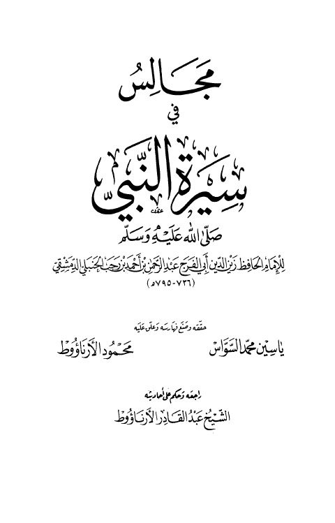

Downloads need an internet connection.
مجالس في سيرة النبي ﷺ
Authors: ابن رجب الحنبلي
Editors: ياسين محمد السواس محمود الأرناؤوط
Publishers: دار ابن كثير
**▫️ العنوان: مجالس في سيرة النبي ﷺ** ▪️ المؤلف: #عبد_الرحمن_بن_أحمد_بن_رجب_الحنبلي ▫️ المحقق: #ياسين_محمد_السواس • #محمود_الأرناؤوط ▪️ الناشر: #دار_ابن_كثير_للطباعة_والنشر ▫️ تاريخ النشر: 1408هـ 1988م ▪️ بلد النشر: بيروت، #لبنان ▫️ الطبعة: 1 ▪️ عدد الأجزاء: 1 ▫️ الصفحات: 146 ▪️ نوع الوعاء: #كتاب ▫️ التصنيف الرئيسي: #السيرة_النبوية ۪